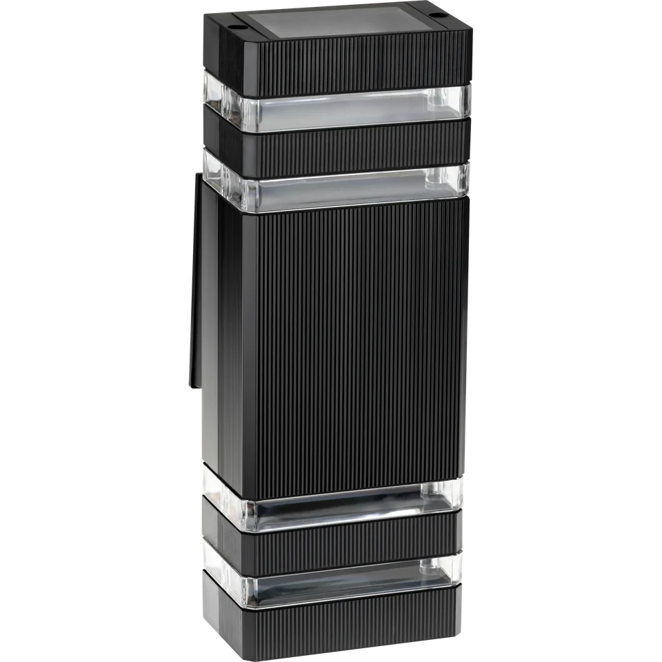
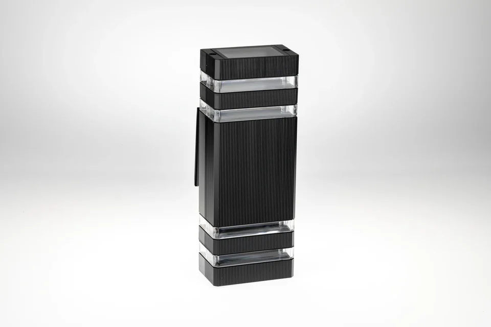

PA–2004 / Ретушь
Каталожная точность
Ретушь предметной съёмки: убраны отвлекающие детали фона, выровнена подача металла и сохранены границы корпуса. В кейсе — исходная съёмка и результат.

STUDIO / FINALСЪЁМКА → ОБРАБОТКА
До и после

ДЕТАЛИ ПРОЕКТА / ОРИГИНАЛЫ